Explore Phuket
A Brief History
Phuket developed as a tin-mining and trading island on the Andaman Sea, with Sino-Portuguese shophouses in Phuket Town and fishing villages along western beaches. Chinese and Malay communities shaped markets and temples before tourism expanded from the 1980s. Rubber plantations and coastal resorts now dominate the economy while Old Town lanes preserve 19th-century merchant architecture.
Attractions Map
Top Sights & Activities
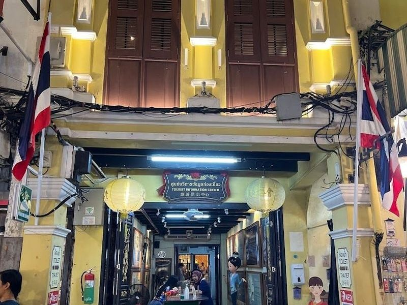
Tourist Informatio Centre | Phuket Old Town
When exploring the vibrant streets of Phuket Old Town, a visit to the Tourist Information Centre is an must. Nestled in a charming two-story building that reflects the area's rich architectural and cultural heritage, this center serves as both a helpful resource for travelers and a mini-museum showcasing local history. The friendly staff are eager to assist with trip planning, offering valuable advice and insights about the attractions nearby.
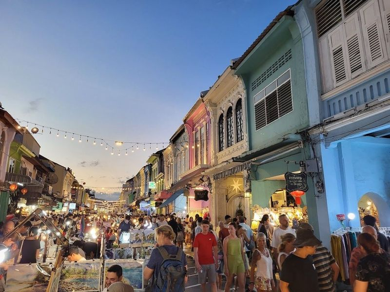
Phuket Old Town
Phuket Old Town, the provincial capital of Phuket, is a historically rich area with an abundance of temples, shophouses, and small printing shops. The town was established during a period of prosperity driven by the valuable metal trade. Its scenic neighborhood showcases remnants of the island's colonial past and reveals the influence of Sino-Portuguese, Chinese, and Malay immigrants who prospered from the tin mining industry.
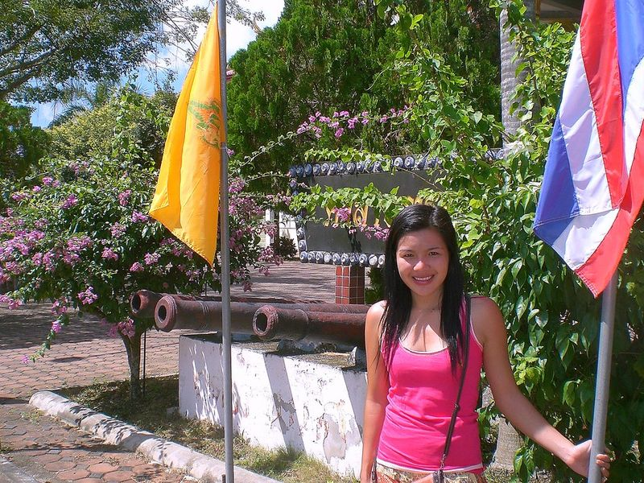
Thao Thep Krasattri and Thao Si Sunthon Monument
A historical monument honoring two heroines who defended Phuket from Burmese invaders in the 18th century. The site forms part of Thao Thep Krasattri and Thao Si Sunthon Monument's documented civic and cultural landscape within Phuket, with archives and visitor information available from municipal or regional heritage authorities.
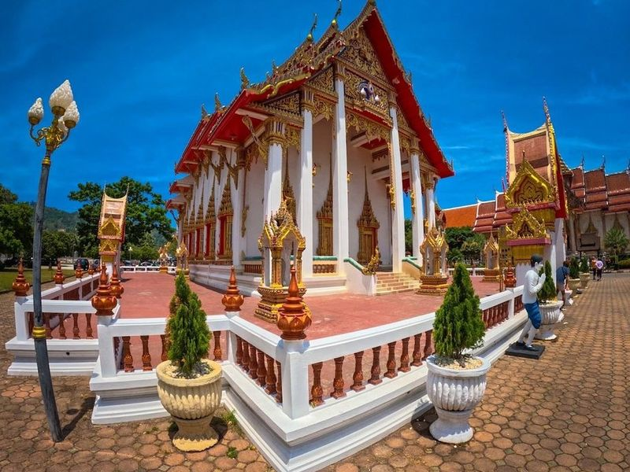
Wat Chalong
Nestled in the heart of Phuket, Chaithararam Temple, also known as Wat Chalong, is a temple complex that dates back to the early 19th century. This sacred site is adorned with intricate Buddha paintings and shimmering golden statues, surrounded by beautifully landscaped gardens that invite tranquility.
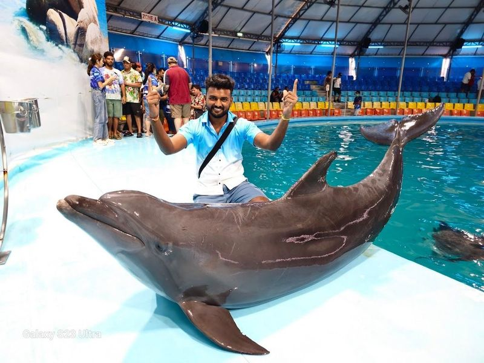
Dolphins Bay Phuket
Dolphins Bay Phuket is an aquatic theme park that offers high-energy marine-life shows and up-close dolphin encounters. The Phuket Dolphin Show provides an immersive cultural experience, featuring intelligent dolphins performing tricks and engaging with their trainers. This captivating display not only entertains children but also educates them about marine mammals in a fun environment.
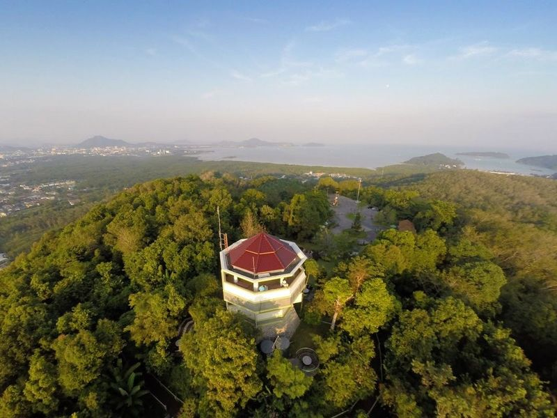
Kaokard Viewpoint Tower
Located on a hill, Kao Khad Views Tower offers panoramic views of the ocean and mountains. Accessible via a long staircase, it is the only viewpoint on the island that provides a complete 360-degree perspective. Visitors can also make a quick stop at an unnamed viewpoint along the way before reaching the tower. Despite being free to visit, this spot is relatively uncrowded, allowing for a peaceful experience and ample parking space.
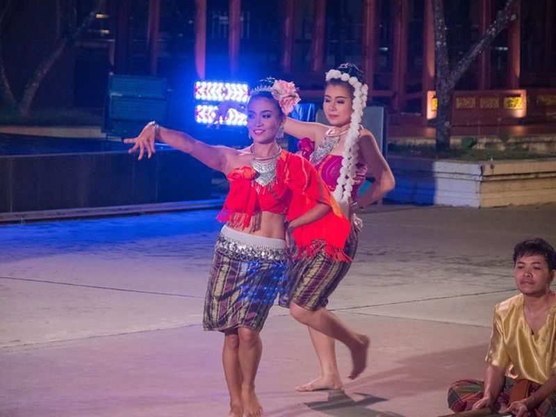
Siam Niramit Phuket
A cultural show that showcases Thailand's rich history and heritage through elaborate performances and visuals. The site forms part of Siam Niramit Phuket's documented civic and cultural landscape within Phuket, with archives and visitor information available from municipal or regional heritage authorities.
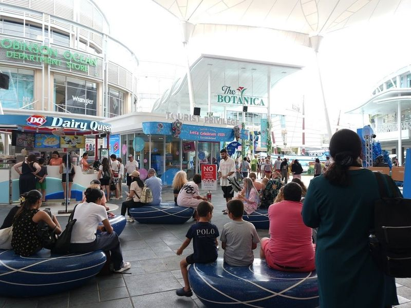
Jungceylon
Nestled in the vibrant heart of Patong Beach, Jungceylon is a sprawling shopping paradise that promises an experience for every visitor. This expansive mall features a diverse array of specialty shops and casual dining options, making it the perfect spot to unwind after a day in the sun. From trendy clothing and stylish accessories to unique souvenirs and spa products, Jungceylon has something for everyone.
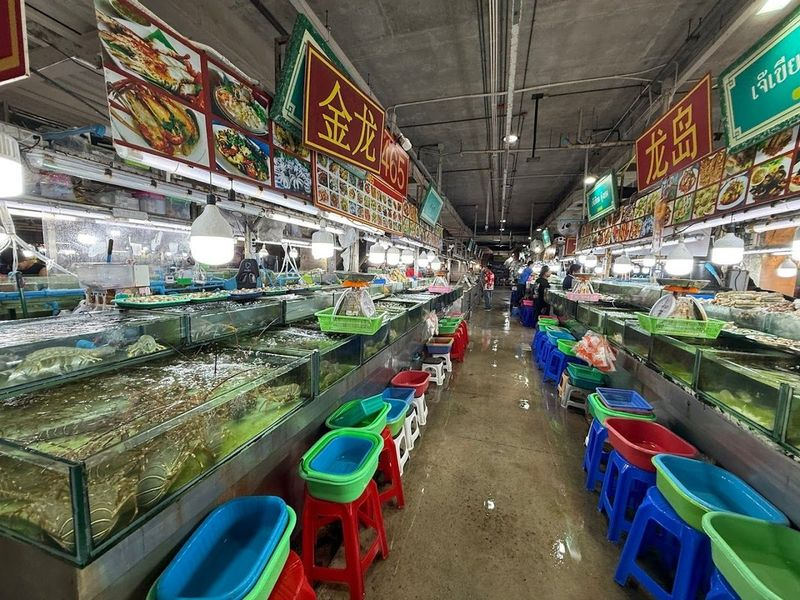
Banzaan Fresh Market
If you're looking for a vibrant market experience in Phuket, Banzaan Fresh Market is the place to be. This indoor/outdoor market offers a wide variety of vendors selling everything from clothing to fresh fruits. explore beautiful displays of local fruits like Jack Fruit and Durian, as well as browse through the fresh seafood and meat department with its diverse selection of fish and seafood. The market also features a food court where sample delicious street food options.
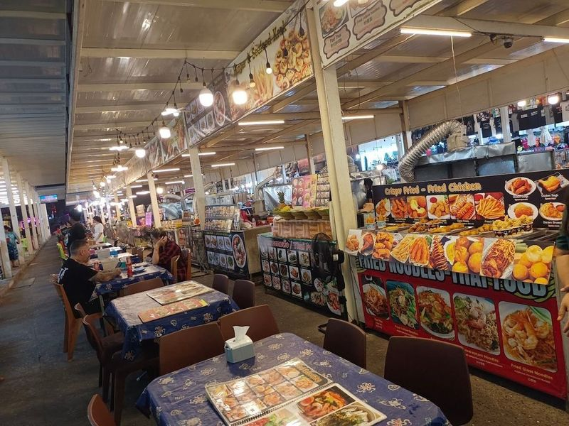
OTOP Market
Patong Otop Shopping Paradise is a bustling local market in Phuket, Thailand, offering a wide array of souvenirs, clothing, traditional food and more. This night market provides an ideal opportunity to experience the essence of Phuket through discounted shopping and indulging in local cuisine under the starry sky. The concept of OTOP (One Tambon, One Product) showcases products from different villages including food, cloth, silk, handicrafts and more.
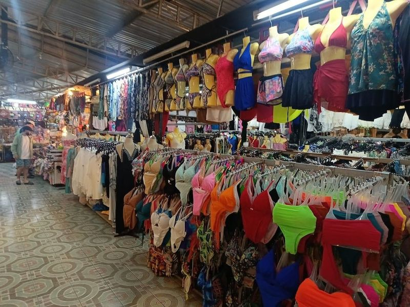
Malin Plaza
Malin Plaza is a bustling night market located in lively Patong, offering a wide variety of goods and street food. It's well-known for its beachwear, Thai spa products, and traditional handicrafts. The market provides a cooler shopping environment compared to other busy markets in the area. Visitors can explore tabletop stalls, re-purposed shipping containers, and more under a metal roof.
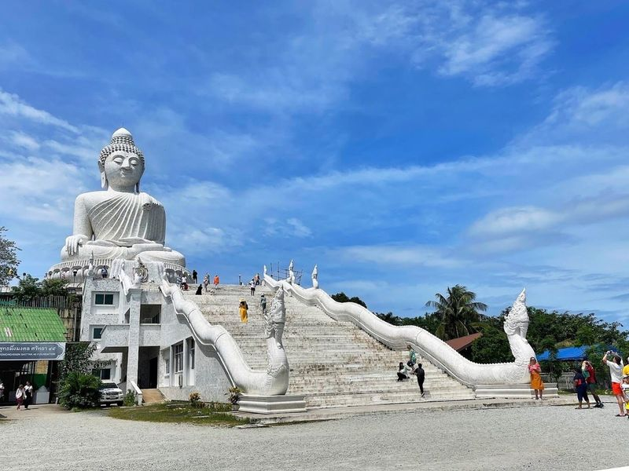
The Big Buddha, Phuket
The Big Buddha, officially known as "Phraphutthamingmongkhol-akenagakhiri Buddha," stands majestically at 45 meters tall atop Nakerd Mountain in Phuket. This white marble statue is not only a significant religious site but also offers panoramic views of the island, including Phuket Town and Chalong Bay. The journey to this landmark is made easy with well-paved roads, despite some winding curves.
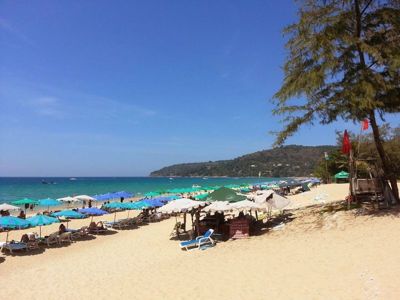
Karon
Karon, a resort town on the west coast of Phuket Island in Thailand, is famous for its long stretch of white sand known as Karon Beach. The town also boasts the Wat Suwan Khirikhet Buddhist temple, home to the Karon Temple Market offering sarongs, jewelry, and street food twice a week.
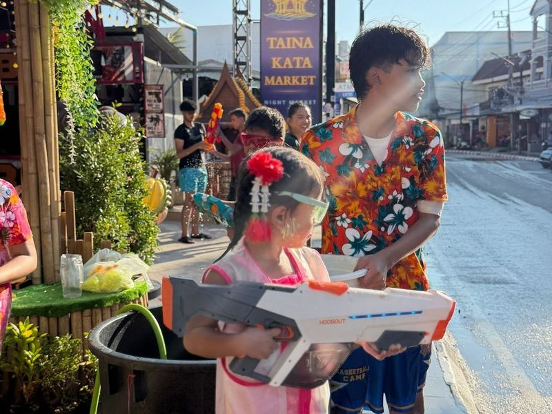
Kata Night Market
Kata Night Market is an outdoor marketplace located in the southwestern corner of Phuket, near Karon. It offers a laidback vibe with trendy bars, cozy cafes, and beachfront resorts. The market features food stands, fruits, vegetables, seafood, and a bar serving cocktails. Unlike some other night markets in Phuket, Kata Night Market has tall ceilings and more space between vendors and visitors to combat the warm climate.
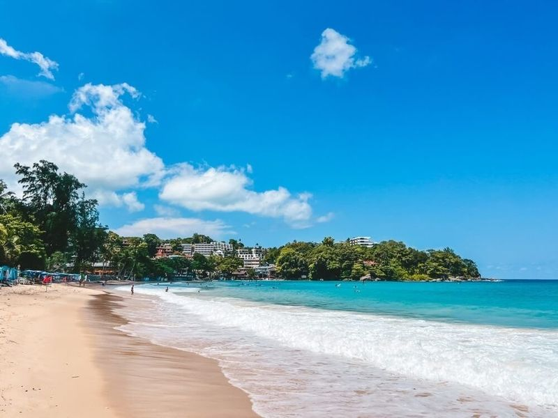
Kata Beach
Kata Beach, a gem on Phuket's southwest coast, is renowned for its picturesque 1.5 km stretch of soft white sand and crystal-clear turquoise waters. This idyllic location is perfect for swimming, snorkeling, and soaking up the sun. The beach is flanked by vibrant restaurants and resorts that cater to every need. Just a stone's throw away lies a community park designed for families seeking fun and relaxation away from the beach hustle.
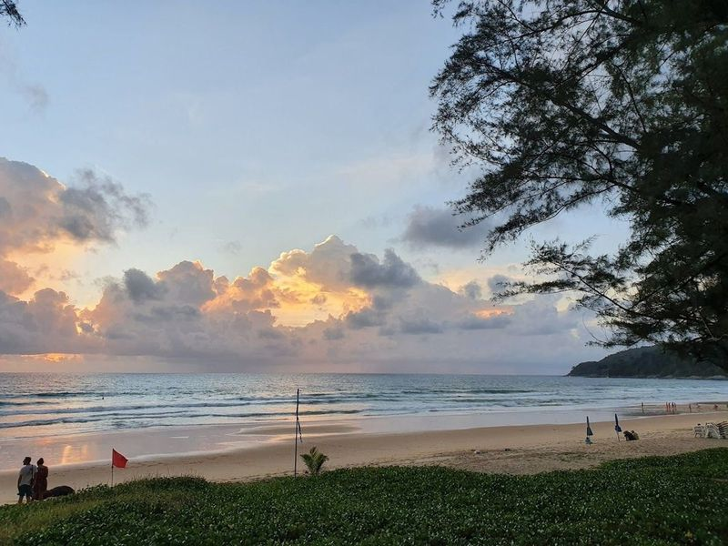
Karon Beach Roundabout
Karon Beach Roundabout, situated at the northern edge of Karon Beach, serves as a picturesque landmark and a helpful guide for visitors. The area offers a quieter atmosphere compared to nearby Patong, with affordable dining options and various markets to explore. It's conveniently located near the beach and is a central point for transportation. The roundabout is adorned with romantic decorations during special occasions, creating a charming ambiance.
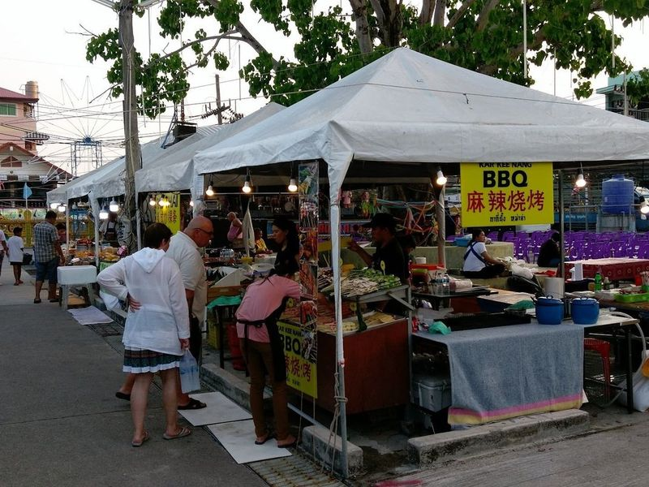
Wat Karon
Karon Temple Market is a must-visit spot in Phuket for shopping enthusiasts. Located near Wat Karon, this market offers a wide range of local products, including street snacks, spices, handicrafts, t-shirts, bags, watches and jewelry. Visitors can immerse themselves in the local culture while honing their bargaining skills. The market is open only on Tuesdays and Fridays and provides an excellent opportunity to combine shopping with exploring the nearby temple.
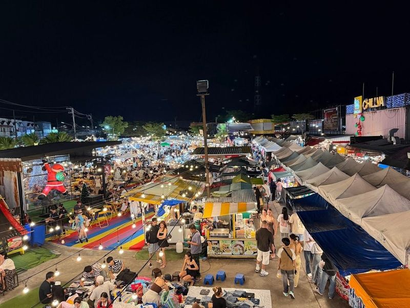
Chillva Market
Chillva Market in Phuket is a trendy and vibrant night market that stands out among the others on the island. It attracts a younger crowd with its creative use of old shipping containers, creating a hip and modern atmosphere. The market offers an array of local food stalls, including meat, seafood, fruits, and sweets. In addition to the culinary delights, visitors can also find fashion items, authentic souvenirs, locally produced clothing and jewelry, athletic shoes, accessories, and gadgets.
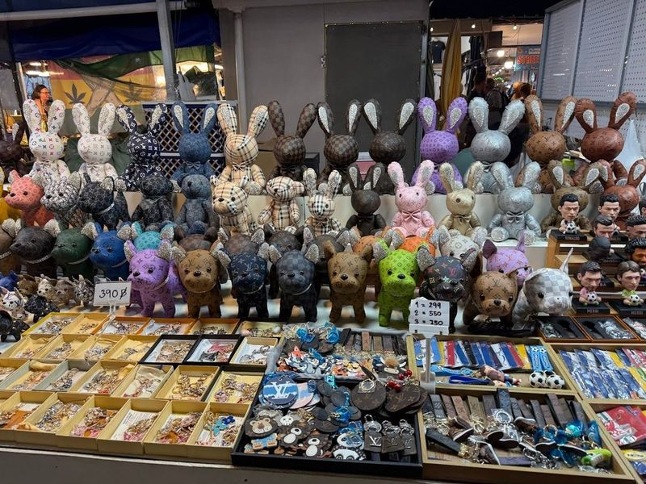
Naka Weekend Market
Naka Weekend Market, also known as Phuket Weekend Night Market or Chaofa Variety Weekend Market, is a bustling night bazaar located near Central Festival in Phuket Town. It's a popular spot for both locals and tourists, offering a wide range of products including batik sarongs, logoed T-shirts, quirky trinkets, pirated items, and secondhand goods.
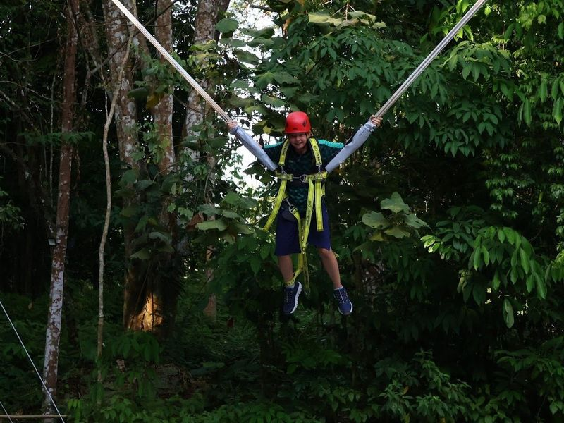
Hanuman World
Hanuman World is a thrilling rainforest adventure park in Phuket, Thailand, offering treetop walkways and exhilarating zip lines. The 800-meter zipline ride provides an adrenaline-pumping experience as it twists through the dense canopy at high speeds. Visitors can embark on a ziplining journey across 32 platforms in the treetops, enjoying the support of friendly staff.
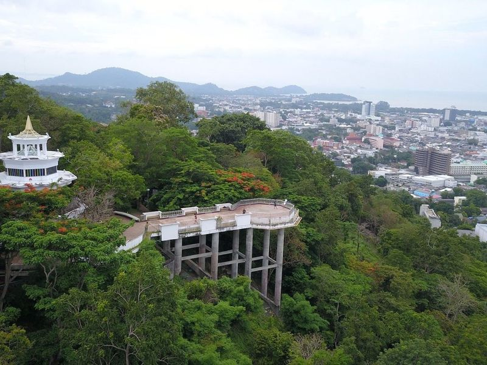
Khao Rang Viewpoint
Nestled atop a hill, the Khao Rang Viewpoint is a must-visit destination for anyone seeking views and a serene atmosphere. This picturesque spot offers sweeping panoramas of Phuket Town, its coastline, and the enchanting offshore islands. Surrounded by lush greenery and the soothing sounds of nature, it’s an ideal place to unwind with loved ones while watching the sunset paint the sky in vibrant hues.
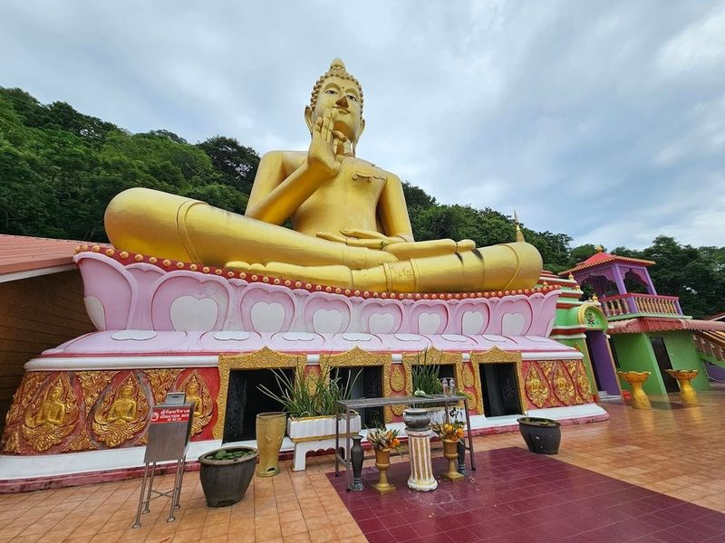
Wat Khao Rang Samakkhitham
Nestled atop Khao Rang hill, Wat Khao Rang Samakkhitham is a vibrant temple that captivates visitors with its architecture and serene surroundings. Adorned with intricately carved naga snakes, this hillside sanctuary features a magnificent golden seated Buddha that once held the title of the largest on the island. The temple's tranquil atmosphere makes it an ideal spot for those looking to experience authentic Thai Buddhist practices without the throngs of tourists found at other sites.
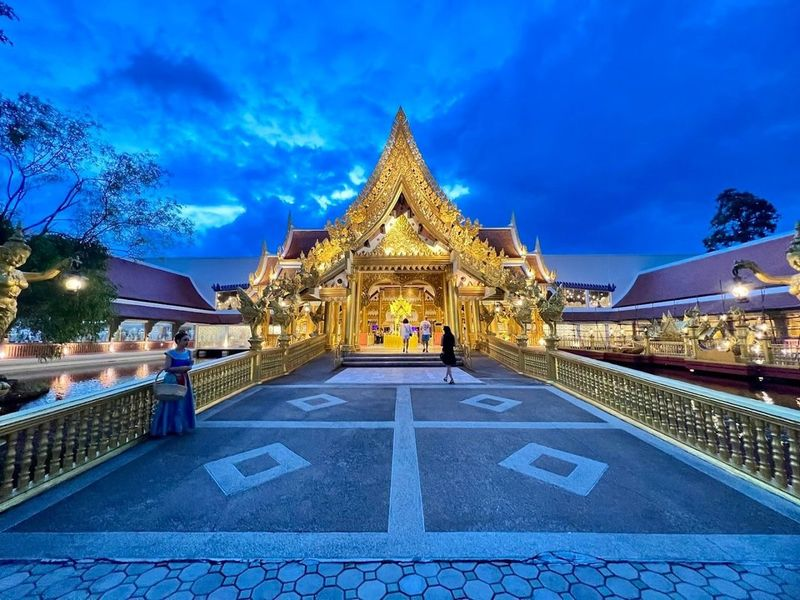
Phuket FantaSea
Phuket FantaSea is a cultural theme park in Phuket, Thailand. This award-winning attraction offers a unique combination of magic, acrobatics, ballet, and special effects including pyrotechnics. The park boasts a 3,000-seat theater showcasing Thai cultural performances and an elephant show.
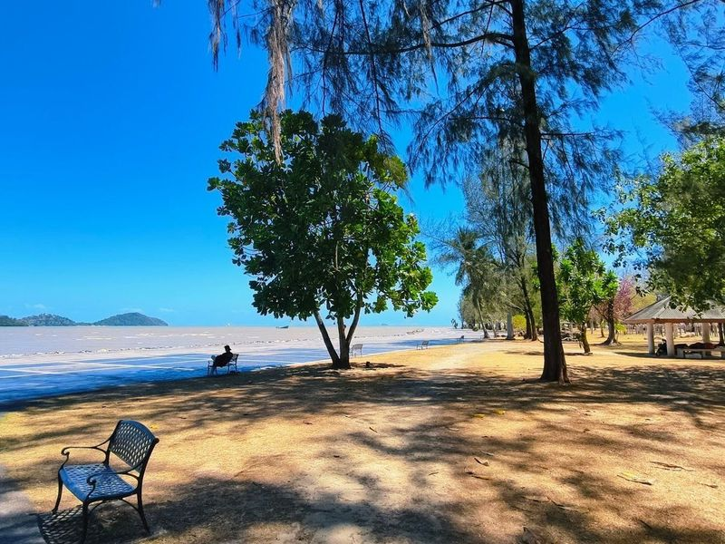
Saphan Hin Park
Saphan Hin Park, located in the southern part of Phuket Town, offers a serene waterside setting for various activities such as walking, jogging, and cycling. The park features spacious open areas, sports facilities, and mangroves that are often used for local festivals and events. Once a bustling port during the tin mining era, it has been transformed into a popular relaxation spot for locals to enjoy picnics or leisurely walks by the sea.
Flying Hanuman
An eco-adventure park offering exhilarating zipline experiences through the lush jungle, suitable for thrill-seekers of all ages. The site forms part of Flying Hanuman's documented civic and cultural landscape within Phuket, with archives and visitor information available from municipal or regional heritage authorities.